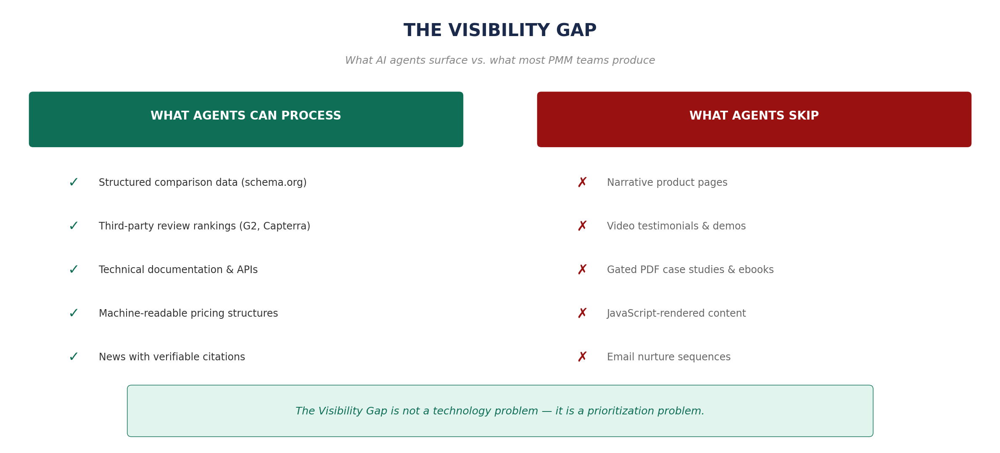
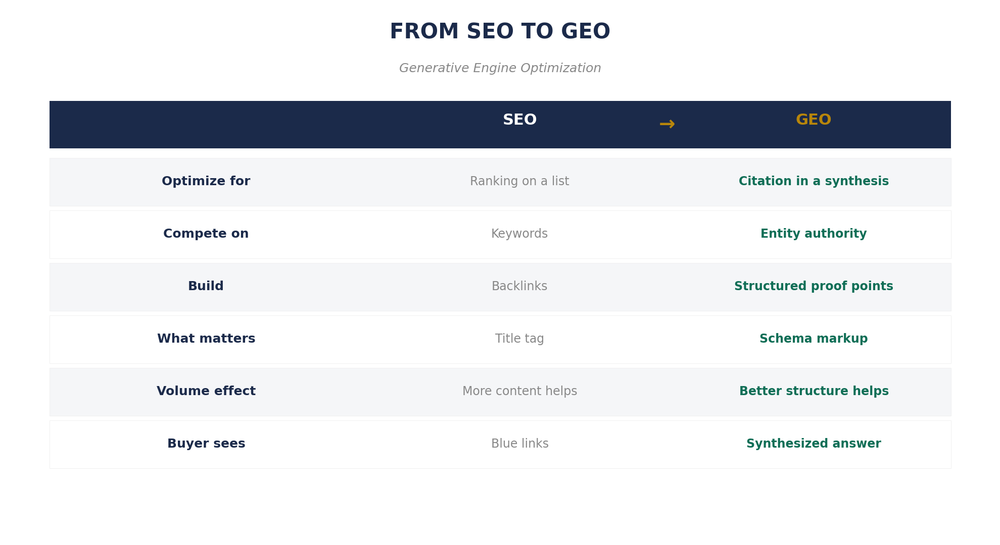

Figure 1: Steps 2–4 of the old journey—where most PMM content lived—now happen inside an AI's context window in seconds.
The economics, workflows, and buyer dynamics that defined product marketing for twenty years are all changing at once. AI agents now compress weeks of buyer research into minutes. Most PMM content is invisible to them. The Pragmatic Framework's 37 activities cluster into three tiers—automatable, augmentable, and irreducibly human—and the PMMs who master this shift will operate at a fundamentally different level.
A product marketer noticed three strange patterns: traffic up but forms down, prospects knowing competitive details they shouldn't, and enterprise deals closing in 3 weeks instead of 11. The cause: buyers had started using AI agents to do research, comparison shopping, and vendor pre-qualification in hours instead of weeks.
Her buyer had hired an intermediary that didn't care about brand affinity, didn't respond to emotional storytelling, and couldn't be schmoozed over a steak dinner. That intermediary now determines who makes the shortlist.
Age of Reports. ETL batch jobs. Static deliverables. Quarterly reviews. Slow data, slow marketing, slow buyers.
Age of Unification. CDP era. Customer strategy. Journey mapping. Win/loss analysis. "A CDP knows your customer."
Age of Agents. Agentic AI. Federated metadata. Agents that monitor, adjust, generate. "An AMP knows your business."
A DMP knew your audience. A CDP knew your customer. An AMP knows your business.
The delta between what AI agents can access and what remains invisible to them. Most B2B marketing assets—nurture sequences, gated content, ABM campaigns—exist in the invisible zone.

SEO optimizes for ranking (blue links). GEO (Generative Engine Optimization) optimizes for citation in synthesized answers. In SEO you compete on keywords; in GEO you compete on entity authority.

The Audit (Do This Week): Open Claude, ChatGPT, or Perplexity. Ask it to evaluate vendors in your category. See if your company appears. That 60-second exercise tells you more about your GEO readiness than any consultant's report.
What happens to each of the 37 Pragmatic boxes when AI agents become part of the team? The exercise produced three natural clusters:
Market sizing, derivative content, event logistics, sales tools production. Agents do the majority today.
If your value is producing artifacts, the automation wave is not your friend.
Positioning, win/loss analysis, buyer personas, pricing strategy. Human essential, agent accelerates.
Operating without agents becomes a competitive disadvantage.
Stakeholder management, customer empathy, thought leadership. Irreducibly human.
These become MORE important because machines can't do them.

A PMM who automates 20 hours a week of Cluster One work and redirects that time into Cluster Two and Three activities will outperform one still manually updating battlecards—not by 20%, but by a factor that justifies the title of this book.
What "10x yourself" means: Not working ten times harder or faster. Operating at a fundamentally different level of strategic impact because you've offloaded mechanical work to machines and are finally free to do work only a human can do.
The conversation about AI inside marketing departments is almost entirely wrong. It's focused on efficiency—that's a CFO question. The CMO question: how do we produce fundamentally different outputs?
Key Takeaways: